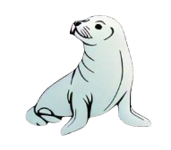

<ion-header   [translucent]="true">
  <ion-toolbar>
    
    <ion-title color="danger">
      <div style="display: flex; align-items: center; gap: 8px;">
        
        <span>NewsFokk</span>
      </div>
    </ion-title>

    <ion-buttons slot="end">
      <ion-button (click)="logout() ">
        Cerrar Sesión
      </ion-button>
    </ion-buttons>


    
  </ion-toolbar>
</ion-header>